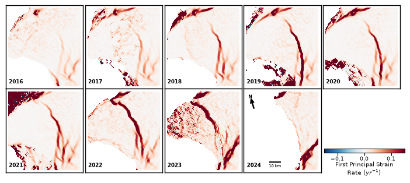

import warnings
import xarray as xr
import numpy as np
import pandas as pd
import dask
from dask.distributed import LocalCluster, Client
import zarr
import math
import cartopy.crs as ccrs
import matplotlib.patches as patches
import matplotlib.pyplot as plt
from matplotlib_scalebar.scalebar import ScaleBar
from pyproj import Transformer
import strain_tools as st
# Spin up a local Dask cluster, limiting the number of workers and the number of threads per work
cluster = LocalCluster(n_workers=4, threads_per_worker=2)
client = Client(cluster)
# 1. Cap Zarr's internal HTTP concurrency per worker
zarr.config.set({"async.concurrency": 2})
# Configure the HTTP backend to allow more time for large chunks
s3_options = {
"anon": True,
"config_kwargs": {
"max_pool_connections": 50,
"retries": {
"max_attempts": 10,
"mode": "standard"
}
}
}
# Display the dashboard link so users can watch the processing graph
print(f"Dask Dashboard: {client.dashboard_link}")
# Load and crop data
zarr_path = "s3://us-west-2.opendata.source.coop/uos-shiver/antarctica/antarctica_multisource_velocity_cubed.zarr"
ds = xr.open_dataset(zarr_path, engine="zarr", storage_options=s3_options)
# Also define a zoomed in area around Chasm-1
transformer = Transformer.from_crs("EPSG:4326", "EPSG:3031", always_xy=True)
tl_x_zoom, tl_y_zoom = transformer.transform(-27.0215, -75.2954)
br_x_zoom, br_y_zoom = transformer.transform(-26.0599, -76.1205)
min_x_zoom, max_x_zoom = min(tl_x_zoom, br_x_zoom), max(tl_x_zoom, br_x_zoom)
min_y_zoom, max_y_zoom = min(tl_y_zoom, br_y_zoom), max(tl_y_zoom, br_y_zoom)
ds = ds.sel(
x=slice(min_x_zoom, max_x_zoom),
y=slice(max_y_zoom, min_y_zoom)
)
# Crop to target time period
years = np.arange(2016, 2026)
# Set resolution and lengh scale
resolution = abs(float(ds.x[1] - ds.x[0]))
length_scale = 1000
print(f"Cropped dataset size: {ds.sizes}")
def calc_winter_means_numpy(data, time_vals, start_year, end_year):
"""
Computes the temporal mean across May-September for each year.
Designed for xr.apply_ufunc: 'time' is always the last axis of `data`.
"""
times = pd.DatetimeIndex(time_vals)
n_years = end_year - start_year + 1
# Pre-allocate output array -> shape: (..., n_years)
out_shape = data.shape[:-1] + (n_years,)
output = np.zeros(out_shape, dtype=np.float32)
# Suppress RuntimeWarnings for slices that are entirely NaN (open ocean/no data)
with warnings.catch_warnings():
warnings.simplefilter("ignore", category=RuntimeWarning)
for i, year in enumerate(range(start_year, end_year + 1)):
# Winter mask: specified year, months May (5) to Sept (9)
mask = (times.year == year) & (times.month >= 5) & (times.month <= 9)
if mask.any():
output[..., i] = np.nanmean(data[..., mask], axis=-1)
else:
output[..., i] = np.nan
return output
mean_vx_zoom = xr.apply_ufunc(
calc_winter_means_numpy,
ds['vx'],
ds['time'],
kwargs={'start_year': years[0], 'end_year': years[-1]},
input_core_dims=[['time'], ['time']],
output_core_dims=[['year']],
vectorize=False,
dask='parallelized',
output_dtypes=[np.float32],
dask_gufunc_kwargs={'output_sizes': {'year': len(years)}}
)
# Apply the custom ufunc to vy
mean_vy_zoom = xr.apply_ufunc(
calc_winter_means_numpy,
ds['vy'],
ds['time'],
kwargs={'start_year': years[0], 'end_year': years[-1]},
input_core_dims=[['time'], ['time']],
output_core_dims=[['year']],
vectorize=False,
dask='parallelized',
output_dtypes=[np.float32],
dask_gufunc_kwargs={'output_sizes': {'year': len(years)}}
)
# Assign the 'year' coordinate back to the reduced outputs
mean_vx_zoom = mean_vx_zoom.assign_coords(year=years)
mean_vy_zoom = mean_vy_zoom.assign_coords(year=years)
C:\Users\gg1bjd\AppData\Local\anaconda3\envs\shiver_env\Lib\site-packages\distributed\node.py:188: UserWarning: Port 8787 is already in use.
Perhaps you already have a cluster running?
Hosting the HTTP server on port 57999 instead
warnings.warn(
Dask Dashboard: http://127.0.0.1:57999/status
Cropped dataset size: Frozen({'time': 2790, 'y': 348, 'x': 321, 'bnds': 2})
# Define figure dimensions
fig_width, fig_height = 6.9, 4.55
fig, axes = plt.subplots(
2, 5, figsize=(fig_width, fig_height), sharex=True, sharey=True
)
axes = axes.flatten()
strain_vmin, strain_vmax = -0.15, 0.15
for i, year in enumerate(years[:9]):
ax = axes[i]
print(f"Processing and plotting winter {year} (Zoomed)...")
vx_yr = mean_vx_zoom.sel(year=year).compute().values
vy_yr = mean_vy_zoom.sel(year=year).compute().values
# Calculate logarithmic strain
e_xx, e_yy, e_xy = st.strain.logarithmic(
vx_yr, vy_yr, pixel_size=resolution, length_scale=length_scale, unit_time="a"
)
# Calculate principal strain
principal = st.strain.principal(e_xx, e_yy, e_xy)
try:
e1 = principal.e1
except AttributeError:
e1 = principal[0]
# Re-wrap in xarray
da_e1 = xr.DataArray(e1, coords=[mean_vx_zoom.y, mean_vx_zoom.x], dims=["y", "x"])
# Plot imshow
im = da_e1.plot.imshow(
ax=ax, cmap="RdBu_r", vmin=strain_vmin, vmax=strain_vmax, add_colorbar=False
)
ax.set_aspect("equal")
ax.set_xticks([])
ax.set_yticks([])
ax.set_xlabel('')
ax.set_ylabel('')
for spine in ax.spines.values():
spine.set_visible(True)
spine.set_color("black")
spine.set_linewidth(1.0)
# --- PANEL 9 SPECIFIC ANNOTATIONS (Index 8) ---
if i == 8:
# --- SCALEBAR (Centered over the Year label box) ---
scalebar = ScaleBar(
dx=1, # Axis in meters (EPSG:3031)
units="m",
location="lower left",
bbox_to_anchor=(0.3, 0.025),
bbox_transform=ax.transAxes,
box_alpha=0.7,
box_color="white",
color="black",
font_properties={"size": 5},
pad=0.15,
sep=1.5,
)
scalebar.set_zorder(10)
ax.add_artist(scalebar)
# --- DYNAMIC TRUE NORTH ARROW ---
minx, maxx = float(mean_vx_zoom.x.min()), float(mean_vx_zoom.x.max())
miny, maxy = float(mean_vx_zoom.y.min()), float(mean_vx_zoom.y.max())
x_center = (minx + maxx) / 2
y_center = (miny + maxy) / 2
lon_lat_crs = ccrs.PlateCarree()
map_crs = ccrs.SouthPolarStereo()
lon, lat = lon_lat_crs.transform_point(x_center, y_center, src_crs=map_crs)
x_north, y_north = map_crs.transform_point(lon, lat + 0.1, src_crs=lon_lat_crs)
dx = x_north - x_center
dy = y_north - y_center
theta = math.atan2(dy, dx)
# 1. Expanded box dimensions to fit a longer arrow stem
box_width_inches, box_height_inches = 0.45, 0.55
rect_w_frac = box_width_inches / fig_width
rect_h_frac = box_height_inches / fig_height
rect_x = 0.08
rect_y = 0.90 - rect_h_frac
# Background box
rect = patches.Rectangle(
(rect_x, rect_y),
rect_w_frac,
rect_h_frac,
transform=ax.transAxes,
linewidth=0,
edgecolor="none",
facecolor="white",
alpha=0.7,
zorder=10,
)
ax.add_patch(rect)
# 2. Geometry for a longer stem & clear separation
half_len_inches = 0.30 # Increased from 0.12 (Total length now ~0.36")
text_dist_inches = 0.40 # Pushes 'N' above the arrow tip
arrow_center_x = rect_x + ((box_width_inches / 2) / fig_width)
arrow_center_y = rect_y + ((box_height_inches / 2) / fig_height) - 0.015
xy_x = arrow_center_x + (half_len_inches * math.cos(theta)) / fig_width
xy_y = arrow_center_y + (half_len_inches * math.sin(theta)) / fig_height
xytext_x = arrow_center_x - (half_len_inches * math.cos(theta)) / fig_width
xytext_y = arrow_center_y - (half_len_inches * math.sin(theta)) / fig_height
text_x = arrow_center_x + (text_dist_inches * math.cos(theta)) / fig_width
text_y = arrow_center_y + (text_dist_inches * math.sin(theta)) / fig_height
# 3. Arrow with visible stem width
ax.annotate(
"",
xy=(xy_x, xy_y),
xytext=(xytext_x, xytext_y),
arrowprops=dict(
facecolor="black",
edgecolor="black",
width=0.8, # Stem line width (points)
headwidth=4.5, # Arrowhead width (points)
headlength=5.5, # Arrowhead length (points)
),
zorder=12,
xycoords="axes fraction",
)
# 4. 'N' Text
ax.text(
text_x,
text_y,
"N",
ha="center",
va="center",
fontsize=6,
weight="bold",
zorder=12,
transform=ax.transAxes,
)
# --- YEAR LABEL WITH SEMI-TRANSPARENT WHITE BOX (All Panels) ---
ax.text(
0.04,
0.05,
f"{year}",
transform=ax.transAxes,
fontsize=6.5,
fontweight="bold",
va="bottom",
ha="left",
bbox=dict(
boxstyle="round,pad=0.2",
facecolor="white",
edgecolor="none",
alpha=0.7,
),
zorder=10,
)
# Completely hide the 10th panel artist so no box or patch is drawn
axes[9].set_visible(False)
# Figure adjustments
fig.subplots_adjust(
left=0.01, right=0.99, top=0.88, bottom=0.25, hspace=0.0, wspace=0.02
)
# Colorbar
cbar_ax = fig.add_axes([0.8, 0.325, 0.2, 0.015])
cbar = fig.colorbar(im, cax=cbar_ax, orientation="horizontal")
cbar.set_label("First Principal Strain\nRate ($yr^{-1}$)", fontsize=7.5,labelpad=-1)
cbar.ax.tick_params(labelsize=6.5,pad=1.5)
plt.savefig("brunt_strain.png", dpi=600)
plt.show()
Processing and plotting winter 2016 (Zoomed)...
Processing and plotting winter 2017 (Zoomed)...
Processing and plotting winter 2018 (Zoomed)...
Processing and plotting winter 2019 (Zoomed)...
Processing and plotting winter 2020 (Zoomed)...
Processing and plotting winter 2021 (Zoomed)...
Processing and plotting winter 2022 (Zoomed)...
Processing and plotting winter 2023 (Zoomed)...
Processing and plotting winter 2024 (Zoomed)...
